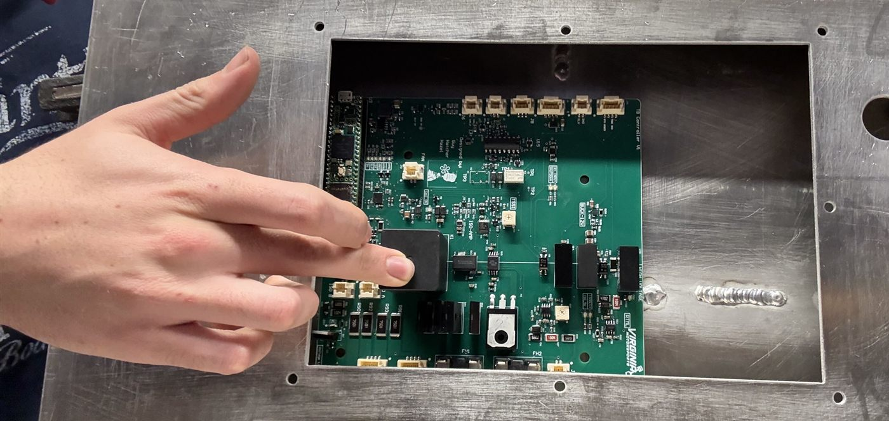

High Voltage Controller (HVC)
A single PCB that handles everything between the FSAE car's tractive battery and the rest of the vehicle: precharge, contactor control, communication with the cell monitors, and the safety latches the rules require.
- Role
- Lead designer
- Team
- Virginia Motorsports FSAE
- Tools
- Altium Designer
- Pack voltage
- 556 V max
- Status
- Prototype
Why a new board
The team's previous HVC was modular, with a separate board for each function. It worked, but it was bulky and needed more wiring and connectors than necessary. This season the pack also goes from 400 V to a 556 V maximum, so much of the high-voltage circuitry needed redesigning.
The new design pulls every tractive-battery function onto one board around a Teensy 4.1, which reports to the rest of the car over CAN.
Requirements
- Operate at up to 556 V pack voltage, up from 400 V last year.
- Precharge the motor controller safely, and survive repeated back-to-back precharge cycles during technical inspection.
- Monitor precharge and close the main positive contactor only once it is complete.
- Drive both main contactors and read back their auxiliary contacts to detect a welded contactor.
- Carry the shutdown circuit and hold IMD and BMS faults latched until a manual reset.
- Communicate with and control the segment cell-monitoring boards over isoSPI.
- Communicate to the rest of the car over CAN and output fault signals.
How it works
Control and CAN
A Teensy 4.1 runs the board. The Teensy is our main microcontroller for all boards. The 4.1 was chosen because of its dual SPI ability, which allows us to implement loop topology for isoSPI. A TCAN3414 transceiver connects it to the car's CAN bus.
isoSPI to the cell monitors
An ADBMS6822 dual isoSPI transceiver with two transformers gives the Teensy two independent isoSPI ports. With one port at each end of the cell-monitor daisy chain, the chain becomes a ring. If one cable or board in the chain fails, the HVC can still reach every other board from the opposite end. Analog Devices calls this reversible isoSPI.
Precharge
A precharge contactor switches three 3000Ω TO-247 power resistors in parallel (1000Ω total). The Teensy 4.1 controls a fan that cools these resistors, allowing them to survive repeat precharges during inspection.
Precharge monitoring
A comparator-only precharge either works or it doesn't, with no clue why. The HVC keeps an LM2903 comparator to close the main positive contactor in hardware, and adds an AMC0381D06-Q1 isolated amplifier so the Teensy can watch the precharge curve. Too fast suggests the motor controller isn't connected; too slow points to leakage or a failed resistor.
Contactor control
Telling a contactor to open doesn't mean it did. Contacts can weld shut and leave HV live. A TPS1H200A-Q1 smart high-side switch drives the main positive coil from the shutdown circuit, and each contactor's auxiliary contacts are read back through a photorelay, so the MCU can confirm every open and close and flag a weld.
Discharge
Even after the contactors open, the motor controller's DC link capacitors can hold a dangerous charge. A MOSFET switches in a discharge resistor to drain them automatically whenever the shutdown circuit opens or the board loses power, so it fails safe without relying on firmware.
Fault latching and indicators
SR latches hold IMD and BMS faults and open relays in the shutdown circuit until someone resets them by hand. A comparator on the fused HV bus drives the HV-present indicator in hardware, independent of the MCU.
Power
An LM5163-Q1 buck converter makes 5 V for the logic. Isolated DC-DC modules power the circuitry referenced to the HV side.

Testing
To test precharge without a live pack, I used two low-voltage bench supplies to create a voltage difference across the precharge circuit. This let me find the voltage where the main contactor closes and the precharge contactor opens. Extrapolated to pack voltage, this happens at 93%, above the 90% the rules require.
What I'd change
The precharge circuit on the first prototype needed rework and modification. I also learned a lesson about documentation. I should have documented the changes immediately after making them. This would have saved time and prevented confusion later on.
Key parts
| ADBMS6822 | Dual isoSPI transceiver, ring topology to the cell monitors |
|---|---|
| AMC0381D06-Q1 | Isolated amplifier with built-in HV divider for precharge voltage sensing |
| TPSI3052-Q1 | Isolated switch driver with integrated bias, holds off the discharge MOSFET |
| IXTH6N100D2 | 1000 V depletion-mode MOSFET, fail-safe discharge |
| TPS1H200A-Q1 | Smart high-side switch for the contactor coil |
| LM2903B | Comparators for hardware precharge-complete and HV-present detection |
| Teensy 4.1 | Main controller |
| TCAN3414 | CAN transceiver |